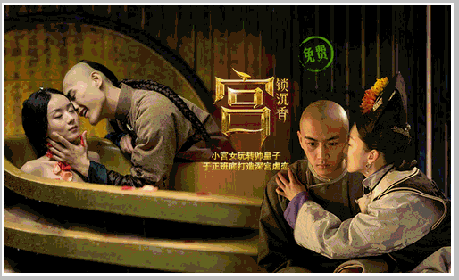
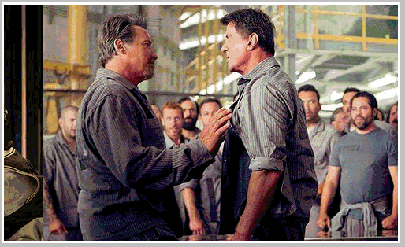
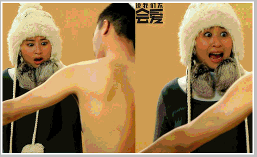
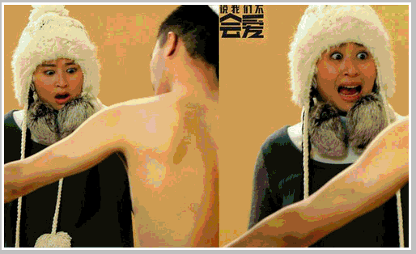
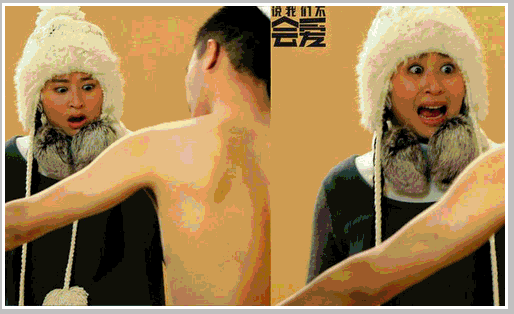

 


离婚律师：第1集
1：擅长离婚诉讼、一向在法庭上慷慨激昂口若悬河的著名律师池海东（吴秀波 饰）算阴沟里翻船了，老婆公然给他戴了绿帽子，更倒霉的是作为受害者的他竟然输掉了和老婆的离婚官司。
离婚律师：第2集
2：擅长离婚诉讼、一向在法庭上慷慨激昂口若悬河的著名律师池海东（吴秀波 饰）算阴沟里翻船了，老婆公然给他戴了绿帽子，更倒霉的是作为受害者的他竟然输掉了和老婆的离婚官司。
离婚律师：第3集
3：擅长离婚诉讼、一向在法庭上慷慨激昂口若悬河的著名律师池海东（吴秀波 饰）算阴沟里翻船了，老婆公然给他戴了绿帽子，更倒霉的是作为受害者的他竟然输掉了和老婆的离婚官司。
离婚律师：第4集
4：擅长离婚诉讼、一向在法庭上慷慨激昂口若悬河的著名律师池海东（吴秀波 饰）算阴沟里翻船了，老婆公然给他戴了绿帽子，更倒霉的是作为受害者的他竟然输掉了和老婆的离婚官司。
离婚律师：第5集
5：擅长离婚诉讼、一向在法庭上慷慨激昂口若悬河的著名律师池海东（吴秀波 饰）算阴沟里翻船了，老婆公然给他戴了绿帽子，更倒霉的是作为受害者的他竟然输掉了和老婆的离婚官司。
离婚律师：第1集
1：擅长离婚诉讼、一向在法庭上慷慨激昂口若悬河的著名律师池海东（吴秀波 饰）算阴沟里翻船了，老婆公然给他戴了绿帽子，更倒霉的是作为受害者的他竟然输掉了和老婆的离婚官司。